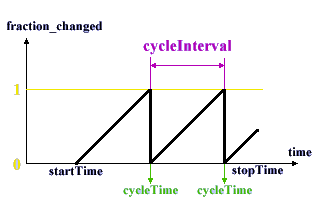

| Hay Klingons Virando A Estribor... |
Ahora que conoces la arquitectura básica del sistema de animación VRML, vamos a empezar cubriendo los nodos que usarás normalmente para la interacción y animación de tus mundos. Hay tres clases principales de nodos sobre los que vamos a aprender: Los sensores, Interpoladores y Scripts. Éstos, a su vez, pueden ser divididos en subcategorías. Ahora vamos a mirar los Sensores. En este primer capítulo vamos a aprender algo sobre Sensores Medioambientales. Éstos no aceptan la entrada directamente del usuario, pero en cambio captan eventos medioambientales, como el paso de tiempo, la posición del usuario, y otras cosas útiles.
TimeSensor
El TimeSensor es básicamente un timer (cronómetro). Es único en VRML, no tiene ninguna posición en el mundo, y ninguna geometría asociada. Simplemente es un cronómetro abstracto, sentado tranquilamente mientras cuenta. También es uno de los nodos más importantes en la animación de VRML. Puede usarse generar eventos regulares, proporcionar eventos cronometrados, o manejar los nodos interpoladores. La sintaxis es como sigue. Explicaré cada campo individualmente en un minuto...
TimeSensor {
exposedField SFTime cycleInterval 1
exposedField SFBool enabled TRUE
exposedField SFBool loop FALSE
exposedField SFTime startTime 0
exposedField SFTime stopTime 0
eventOut SFTime cycleTime
eventOut SFFloat fraction_changed
eventOut SFBool isActive
eventOut SFTime time
}Vale. En primer lugar está el campo cycleInterval. Es bastante autoexplicativo: devuelve el tiempo que el timer correrá antes de restablecestse. enabled (habilitado) es también un campo bastante obvio, y muy útil para activar y detener los timers. El campo loop especifica si el timer se ejecutará continuamente o si simplemente lo hará una vez. Si está a true, se generará un evento cada cycleInterval. De otra manera sólo se generará uno, después del cycleInterval. Los campos startTime y stopTime poseen valores SFTime que especifican cuándo comienza a contar el cronómetro y cuándo se detiene, igual que para el nodo Sound.
Ahora, los eventos. Son partes muy importantes del TimeSensor.
El primero es el cycleTime. Este evento se envía cada vez
el cronómetro alcanza el cycleInterval, tanto si se repite
con el loop como si no. El valor enviado es el tiempo actual. Así,
si tuvieras un TimeSensor repitiendose continuamente con un cycleInterval
de
1 segundo, el evento del cycleTime se enviaría todos los
segundos con un valor del tiempo actual (qué aumentaría en
1 cada vez). Esto es útil para eventos regulares y y señales
intermitentes. Para manejar animaciones continuadas, como las producidas
con nodos Interpoladores, necesitamos un riego continuo de señales.
Esto se logra mediante el eventOut del fraction_changed. Esto genera
eventos tan rápido como puede (aunque no hay ninguna garantía
sobre la regularidad de esos eventos) y devuelve un valor SFFloat que es
el fragmento del cycleInterval que está actualmente completo.
Por ejemplo, si tuvieras un cycleInterval de 10 segundos, esto es
lo que un fraction_changed devuelve en un bucle TimeSensor.

Piensa, sin embargo, que no hay garantía de que un evento se generará en este momento particular, sólo de que se generarán eventos en general. Este evento es muy útil para interpoladores, que emplean claves para enviar valores que interpolan en distintos nodos, unido a fracciones de tiempo particulares. Todo esto será cubierto más adelante, de todos modos, o sea que no te preocupes en entenderlo de momento. El evento time se genera al mismo tiempo que fraction_changed, y contiene un valor que corresponde al tiempo absoluto del evento. isActive se genera siempre que el cronómetro empiece y se detenga. El valor del SFBool es TRUE o FALSE, dependiendo si el cronómetro ha comenzado o ha detenido su funcionamiento.
Este ejemplo( y su código) son muy simples, muestra el evento cycleTime de un TimeSensor que se repite dirigido (route) al exposedField del startTime del nodo AudioClip. Este mundo se compone sólo de un texto y el sonido que se activa cada 2 segundos. Es una manera muy obvia y sencilla de realizar el ejemplo, pero transmite el mecanismo, ¿no?. Aprenderás más sobre como usar el fraction_changed cuando lleguemos a los interpoladores.
VisibilitySensor
El próximo tipo de sensor es el VisibilitySensor. Es más un sensor para la interacción; en él se define una caja invisible que envía eventos cuando entra y sale del campo de visión del usuario. Si la caja entra el campo de visión, el evento isActive envía un valor de TRUE, y el evento enterTime el momento de entrada. Si sale, el evento isActive envía un valor de FALSE. Los campos exitTimecenter y size definen el tamaño de la caja. La definición completa se muestra debajo:
VisibilitySensor {
exposedField SFVec3f center 0 0 0
exposedField SFBool enabled TRUE
exposedField SFVec3f size 0 0 0
eventOut SFTime enterTime
eventOut SFTime exitTime
eventOut SFBool isActive
}VisibilitySensor será muy útil para optimizar tus escenas. Tener un número grande de animaciones que corren al mismo tiempo puede ser un trabajo muy duro para la CPU, y reducirá horriblemente la velocidad de tus mundos. Usando VisibilitySensor para detener animaciones que están fuera del campo de visión de los usuarios, podrás acelerar las animaciones de tus mundos tranquilamente hasta el límite que consideres conveniente. Esto puede hacerse sencillamente enviando el evento isActive al campo enabled del TimeSensor apropiado.
Ahora, echa un vistazo a este ejemplo y a su código. Consiste en una caja, con un VisibilitySensor en la misma posición. Cuando miras hacia la caja, puedes oir el sonido. Si miras a otra parte, mientras la caja esté fuera del borde de la pantalla, el no se oirá el sonido. Y volverá a sonar cuando tengas de nuevo la caja a la vista. Esto se hace de una manera muy simple. El sonido es un AudioClip en un loop, y el enterTime y el exitTime del VisibilitySensor se envia al startTime y stopTime del AudioClip.
ProximitySensor
Un ProximitySensor es muy similar a un VisibilitySensor, sólo que genera eventos isActive cuando el usuario entra o sale de la caja definida por el nodo. Los eventos enterTime y exitTime funcionan como antes, como el evento isActive. Mientras el usuario esté dentro del ProximitySensor se lanzaran eventos, siempre que su posición u orientación relativas al ProximitySensor cambien, a través de los eventOut position_changed y orientation_changed. Éstos contendrán el valor de la nueva posición u orientación del avatar, cualquiera que sea. Recuerda, éstos están en el sistema de la coordenada local del ProximitySensor, que será relativo al centro del sensor.
ProximitySensor {
exposedField SFVec3f center 0 0 0
exposedField SFVec3f size 0 0 0
exposedField SFBool enabled TRUE
eventOut SFBool isActive
eventOut SFVec3f position_changed
eventOut SFRotation orientation_changed
eventOut SFTime enterTime
eventOut SFTime exitTime
}Este mundo de ejemplo (con el código) muestra un ProximitySensor en acción. Si el usuario se acerca a una cierta distancia de la caja, entra en el ProximitySensor y el sonido comienza. Cuando sale, se detiene. Este ejemplo usa las mismas asignaciones de ruta que en el ejemplo anterior, dirigiendo el enterTime y exitTime al startTime y stopTime del AudioClip.
Collision
Este nodo quizás es ligeramente distinto de los que ya hemos visto. Se usa para detectar colisiones en las escenas, aunque también se puede usar como un sensor de colisiones para las animaciones. Básicamente, es un nodo de agrupación que puedes usar para habilitar o deshabilitar la detección de colisiones entre el usuario y los children. Si su campo collide tiene el valor TRUE, la colisión será detectada, y el objeto parecerá sólido. Si tiene el valor FALSE, no se comprobarán las colisiones, y el usuario podrá atravesar directamente el objeto en cuestión. También puedes especificar un campo proxy, que es un campo que puede usarse para la detección de clisiones EN VEZ DE geometry en el campo children. Tiene los campos normales de cualquier nodo de agrupación, addChildren, removeChildren, bboxCenter, y bboxSize. De momento no te preocupes por ellos. Luego los veremos con calma. La razón de incluir esto aquí se encuentra en el eventOut collideTime. Puede usarse para activar eventos cuando el usuario colisiona con la geometria. Es un eventOut de SFTime, y se genera siempre que el usuario colisione con la geometría apropiada (niños o proxy), con el valor del tiempo en que la colisión ocurrió.
Collision {
eventIn MFNode addChildren
eventIn MFNode removeChildren
exposedField MFNode children []
exposedField SFBool collide TRUE
field SFVec3f bboxCenter 0 0 0
field SFVec3f bboxSize -1 -1 -1
field SFNode proxy NULL
eventOut SFTime collideTime
}El nodo Collision puede ser muy útil para acelerar la velocidad de representación. Si por ejemplo tienes un objeto con una geometría muy compleja, puedes sustituir la colisión con ese objeto por la colisión con una simple caja asignándosela, simplemente, al campo proxy. Esto reducirá el realismo ligeramente, pero aumentará la velocidad hasta extremos impensables. Puedes también utilizar el campo proxy para poner límites a ciertas partes del mundo, por ejemplo, colocando una pared invisible que el usuario no sea capaz de traspasar. Esto hará tus escenas mucho más sencillas de explorar y usar.
Este ejemplo y su código demuestran el uso del nodo Collision como sensor, pero también cómo la geometría del proxy y el campo collision afectarán a tus escenas. La esfera cian de la izquierda tiene el campo collision puesto a FALSE. La esfera magenta lo tiene a TRUE y su collideTime está dirigido al startTime del AudioClip de manera que suene una vez al detectar la colision. La esfera amarilla de la derecha tiene en su proxy una caja de 4 metros. El collideTime de este nodo está dirigido a un AudioClip diferente. Fijate en que no puedes aproximarte a la esfera amarilla a tanta distancia como a la magenta antes e que se oiga el sonido, y que ya no puedes aproximarte más.
Arañémoslos, Jim
Bueno, esto fue todo para los sensores medioambientales por el momento. En el próximo capítulo cubriremos los sensores de tipo "point device", con los que podremos tomar y controlar datos por parte del usuario.